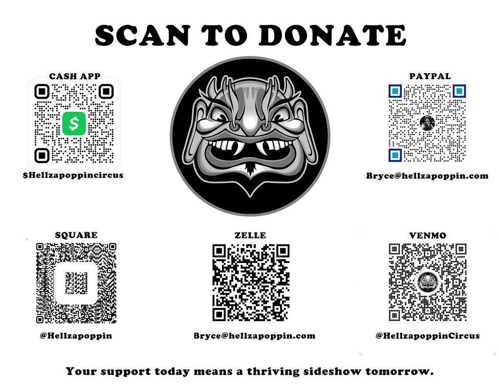

HELP KEEP IT WEIRD.
Stand with the performers preserving a living, breathing sideshow tradition.
PRESERVE THE
EXTRAORDINARY.
The producers
Bryce “The Govna” Graves and Willow Lauren produce, manage, book, and handle the daily work behind the touring company. The official appeal describes their commitment as all-consuming: their livelihoods depend on the show's success, and they carry much of the responsibility for preserving this performance tradition.
Keeping a living art form alive
Hellzapoppin describes itself as one of the last true traveling circus sideshows. Traditional sideshow is at a crossroads, and the troupe works to keep its history and skills visible while giving extraordinary independent performers a place to share their craft.
Coming back after shutdown
The COVID-19 shutdown kept stages dark for about a year and a half and canceled more than 200 Hellzapoppin events, leaving performers without audiences or work. The company says it was among the first touring acts to launch a national tour after reopening and initially sold out nearly every show, but rebuilding after that disruption has remained difficult.
Touring costs and crowded calendars
By mid-2021, touring schedules were crowded with artists competing for the same dates and venues. Rising fuel, shipping, and ticket costs added pressure, while mask rules and testing requirements contributed to cancellations across the live-event industry, including Hellzapoppin's own dates.
Staying connected with fans
The appeal reports that social-ad costs rose from around ten cents to as much as six dollars per click, with poor reach for the price. It also says automated moderation can mistake professional acts such as sword swallowing, fire eating, walking on broken glass, and the bed of nails for self-harm, and that censorship and shadow-banning have limited the troupe's ability to share its work with fans.
Why your support matters
Hellzapoppin says the sideshow is more than entertainment: it is a cultural tradition and a home for performers whose unusual skills have few comparable stages. Support helps sustain the artists' livelihoods, keep the production touring, and introduce the art to audiences around the world.
Be part of the solution
Contributions help the troupe continue its work and carry the sideshow tradition into its next chapter. Merchandise purchases also directly support the company and its performers.
PICK YOUR
PAYMENT METHOD.
Use one of the official payment links below, or scan the matching QR code in the donation graphic. The graphic also includes the Zelle QR code and recipient address.
ZELLEScan the code or use Bryce@hellzapoppin.com

Help the show go on.
Shop Hellzapoppin merchandise to support the troupe, or contact the producers about other ways to contribute to the traveling sideshow.
SHOP MERCHANDISE ↗Keeping it weird,
Bryce “The Govna” Graves · Producer/Ringleader
Willow Lauren · Co-Producer/Performer